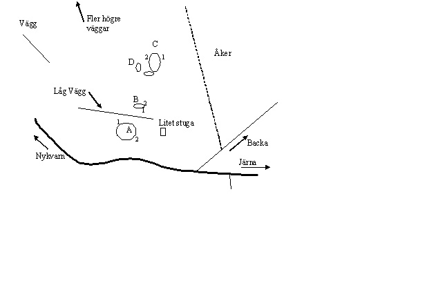
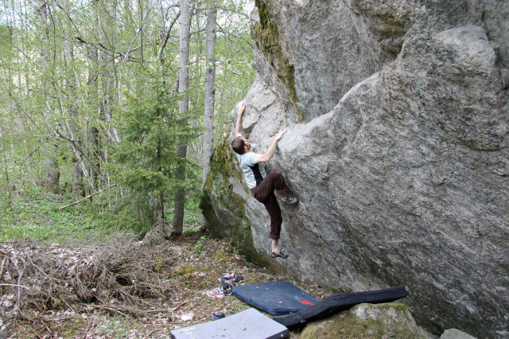

Nytt boulderområde utanför Järna. Blocken hittades våren 2009 och en del har utvecklats. Två feta block, några mindre och en del små väggar. De stora blocken är de intressantaste med flera mycket överhängande sidor. Till och med lite tak finns. Tyvärr ganska vass sten på sina ställe och lite grepplöst. Potential för flera nya leder, främst lite hårdare. Alla projekt är självklart öppna.
Länge bort i området finns även en del kompakta väggar med möjlig potential för repklättring. En annan samling block varav ett riktigt as ligger ca 1km närmre Järna. Vintertid syns de över en åker på höger sida (om man åker från Järna). Här har inget gjorts ännu.
Blocken ligger i ett fint lövskogsområde några km från Järna på vägen mot Nykvarn. Block A ligger ca 50meter från vägen upp i en backe men trots detta är riktigt svåra att se under sommarn när det är löv på träden. Detta är antagligen förklaringen till att de inte hittats förrän nu. Om man kommer från Järna ligger blocken på höger sida direkt efter en grusväg som tar av åt höger skyltad "Backa". Parkera väl åt sidan på grusvägen. Parkera ej på traktor vägen i kanten på åkern då denna används av bonden.
Karta:
(OBS! Alla små block är ej utritade)
Det största blocket i området. 2 fina arreter, en grotta och lite annat väntar på bestigning.
Ett litet block om ligger nedanför den lillla tvärväggen mellan block A och block C. Två problem gjorda, möjligen plats för ett till.
Block C:
Det andra stora blocket i området. Två riktigt överhängande sidor och en stor slabb. Potential för fler hårda turer.
Block D
: Några enklare uppvärmningsproblem
Nils på Hangelkammrennen, block C
Ola på Tarzans son, block C
Copyright (C) Permission is granted to copy, distribute and/or modify this document under the terms of the GNU Free Documentation License, Version 1.3